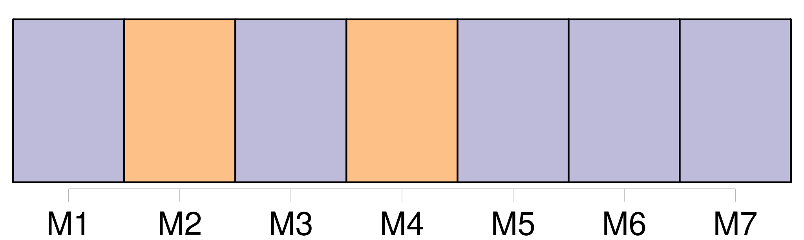
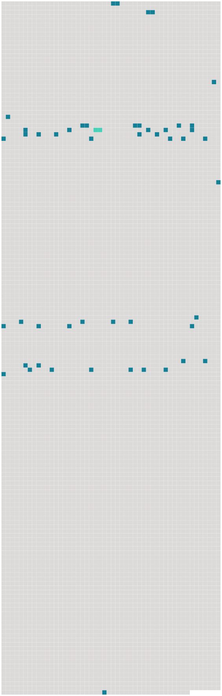

Longueur nb maillons : 50 mentions |
  |
Le ménage s'est trouvé parfaitement d'accord malgré la différence d'âge, et dès la première année, Manine a mis au monde [Clémence] [qui] a maintenant près de sept ans. [4 phrases] De temps en temps elle fait semblant de gronder [Clémence] [qui] ne veut pas s'endormir. [30 phrases] Au dehors rien ne bougeait, et dans la maison, Manine et [Clémence] dormaient d'un sommeil qu'on eût dit sans souffle. [10 phrases] Malgré la gentillesse du bébé qui commence à me sourire et me connaître, malgré la gaieté bruyante de [Clémence] , je m'ennuie de l'absence de Manine. [3 phrases] [Clémence] [qui] est déjà coquette se moque de ces vêtements disparates et [méprise] [sa] petite sœur comme une poupée mal habillée. [Sa] poupée à [elle] est vêtue de dentelles fines et de satin rose, et [elle] ne supporterait pas qu'il en soit autrement. [Son] désir de belles robes pour [elle -même] n'est pas moins grand, et de plus, [sa] beauté à venir [lui] cause un véritable souci. [Elle] m'en parle à tout propos et si je ris de [son] insistance, [elle] se fâche et [pleure]
Souvent, assise à côté de moi, elle se regarde dans un bout de miroir qu' [elle] traîne partout avec [elle] , et, du bout de l'ongle, avec une inlassable patience, [elle] enlève une à une les petites parcelles de peau sèche que le hâle a brunie et fait craqueler sur [son] visage.
D'autres fois, attentive à ne pas froisser les dentelles et le satin de [sa] poupée, [elle] l'habille et la [déshabille] , sans un mot, interminablement. [16 phrases]
Tout cela coupé de silences qui nous permettent de nous réjouir du babillage de [Clémence] et du petit Jean, du gazouillis infiniment léger de la petite Reine, du chant des oiseaux dans les branches du noyer, et enfin, des bruits de toutes sortes que font dans la campagne les hommes et les bêtes. [74 phrases] Je pensai alors aux convulsions, et je suppliai [Clémence] d'aller chercher du secours au moulin. Mais [Clémence] accroupie sur le pied de mon lit refusa en pleurant, car si [elle] était effrayée par les cris de [sa] petite sœur, [elle] l'était bien davantage à l'idée de traverser le jardin dans l'obscurité. Tout ce que je pus [lui] promettre « en pour » ainsi qu' [elle] avait coutume de dire ne put [la] décider. [1 phrases]
Et tout à coup [Clémence] me dit : [12 phrases] [Clémence] prit le départ de [sa] mère d'une autre manière.
Rassurée sur [sa] petite sœur [elle] sauta de mon lit à terre en demandant : [3 phrases]
[Elle] passa les mains sur [son] tablier rapiécé : [1 phrases]
[Elle] énuméra tous [ses] vêtements, jusqu'à [ses] souliers, et lorsque j'eus répondu oui pour chaque chose, [elle] se mit à rire et à sauter joyeusement par la chambre. [157 phrases]
Avec une faux, faite d'un bâton ou d'une plaque de tôle, il fauchait les cailloux et les mottes de terre de la cour, entraînant derrière lui [Clémence] et Nicole et leur disant fièrement : |
 |
La ressource peut être téléchargée sur la page Ortolang
Si vous avez des questions ou vous voyez des erreurs, merci d'envoyer un mail à silvia.federzoni89@gmail.com
Site développé par S. Federzoni (contact)